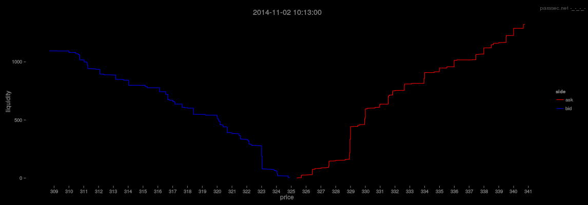

Limit Order Book Visualisation
Visualising High Frequency Trading in Bitcoin
Sat Nov 22 02:26:07 UTC 2014
Contents
- Introduction
- Limit Order Books
- Order Book Event Data
- Visualising Order Book Events
- Visualising Order Cancellations
- Visualising Order Book Depth and Liquidity
- Shenanigans
Introduction
Some time ago, I had a look at the seasonality of traded volume on Bitcoin exchanges, up until December 2013. My objective was to determine approximate trading sessions for 3 popular exchanges. I found that the intra-day volume followed a kind of sinusoidal pattern, which I attributed as the tell tale sign of the presence of humans on the exchanges. This article attempts to visually explore the extent of algorithmic trading in Bitcoin, with a focus specifically on the Bitstamp exchange and limit order book data.
Limit Order Books
Feel free to skip this part if you are already familiar with the inner workings of a limit order book and exchanges in general.
An exchange/bourse is a marketplace where agents can buy and sell _things_ to each other. There are many ways for an exchange to facilitate this, however the most popular mechanism, and the subject of this article, is the concept of a Limit Order Book.
The first main component of the exchange, serving parties interested in buying or selling units of some object (a stock, contract, currency, etc.) is the Limit Order Book. The Limit Order Book is a type of auction mechanism for recording the _passive_ trading intentions of individuals (people, organisations, algorithms..). A passive intention to buy an asset, is a bid to buy that asset at a price which is less than, or equal to, the current best bid for the asset in question. Similarly, a passive intention to sell an asset, is a (asking) price which is greater than, or equal, to the current best asking price. The price of the bid or ask order is known as the Limit Price. In the case of a Bid, the limit price is the maximum amount a party is prepared to pay to buy the asset, and in the case of an Ask, the limit price is the minimum amount the party is prepared to sell the asset for.
The order book consists of 2 sides. The Bid side, which contains limit orders for parties interested in buying, and the Ask side, which contains limit orders for parties interested in selling. Each side of the book is a priority queue: orders are ordered by their limit prices, such that on the bid side of the book, parties willing to pay more for the asset are placed at the top of the book. Similarly, parties willing to sell for less are placed at the top of the ask side of the book. The top of the bid and ask sides of the book are known as the current best bid and ask. The difference between the best bid and ask is known as the market spread. If 2 or more parties insert orders at the same bid or ask price, then the orders are ordered according to arrival time. Specifically, each side of the order book is a price priority FIFO queue.
The second main component of the exchange is the matching engine. The role of the matching engine is to match incoming orders to buy or sell against limit orders resting at the various levels in the order book. The resting limit orders are said to be market makers because they are providing liquidity to the market. In order for a trade to occur, a trader (market taker) must cross the market spread and pay the asking price if the trader is buying, or the bid price if the trader is selling. Specifically, limit orders are removed from the order book according to their price/time ordering, by impatient traders who require their orders to be executed immediately. The arrival rates and volume of these impatient orders (demand) vs the amount of resting volume, and the rate at which it is replenished (supply), is the mechanical essence of the exchange.
To illustrate the 2 components of the limit order book and exchange matching engine, the following table represents the top 10 best bid and ask orders to buy and sell Bitcoin on the Bitstamp exchange at 10:13am on the 2nd November 2014. The left hand side contains the top 10 best bids from parties interested in buying a specific amount at a specific price. The right hand side contains the top 10 best asks from parties interested in selling. The first row represents the current best bid and ask prices along with the amount of volume available at those prices. The Liquidity column is the cumulative sum of volume available at all price levels.
Now, suppose that an order to immediately buy 10 Bitcoin arrives. The exchange matching engine will honor this request by removing the first 4 ask orders and then partially removing the 5th order, resulting in 5 trades, and widening the spread, such that the new best ask in the order book after filling the order request will be 12.89324700 @ $325.68. Similarly, if an order to immediately sell 5 Bitcoin arrives, the order will consume (hit/lift) the first 4 bid orders and partially consume the 5th, leaving the best bid at 13.25048100 @ $324.56. The initiator/aggressor of the buy trade (market order) pays the VWAP (Volume Weighted Average Price) for 10 Bitcoin:
((325.38*1.12400000)+(325.39*0.61464703)+(325.45*1.20200000)+(325.67*0.45260000)+(325.68*6.60675297)) / 10 = $325.60
It is in the interest of the aggressor who placed the market order to buy 10 Bitcoin to receive the lowest possible VWAP. The VWAP received depends on the amount of volume available at each price level in the order book. And since the exchange matching engine matches incoming market orders to resting limit orders by price/time priority, the VWAP depends on the Liquidity: the cumulative sum of volume at each price level required to fill the incoming order.
| Bids | Asks | |||||
| Liquidity | Volume | Limit Price | Limit Price | Volume | Liquidity | |
| 3.458816700 | 3.45881670 | 324.88 | <- Spread -> | 325.38 | 1.12400000 | 1.12400000 |
| 3.651828800 | 0.19301215 | 324.85 | 325.39 | 0.61464703 | 1.73864700 | |
| 4.265947400 | 0.61411858 | 324.82 | 325.45 | 1.20200000 | 2.94064700 | |
| 4.880481100 | 0.61453372 | 324.80 | 325.67 | 0.45260000 | 3.39324700 | |
| 18.25048100 | 13.3700000 | 324.56 | 325.68 | 19.50000000 | 22.89324700 | |
| 18.62248100 | 0.37200000 | 324.36 | 325.71 | 2.00000000 | 24.89324700 | |
| 18.86584700 | 0.24336568 | 324.36 | 325.72 | 0.91700000 | 25.81024700 | |
| 19.24584700 | 0.38000000 | 324.33 | 325.99 | 0.76300000 | 26.57324700 | |
| 19.84584700 | 0.60000000 | 324.07 | 326.09 | 1.45639760 | 28.02964500 | |
| 26.89584700 | 7.05000000 | 324.06 | 326.19 | 1.47153000 | 29.50117500 | |
The amount of volume/liquidity available on each side of the order book determines the order book "shape". The following graph shows the shape of the order book for the same point in time as above (10.13am). The y-axis shows the cumulative sum of volume available at each price level +-5% from the current best bid/ask. Higher amounts of volume closer to the current best bid/ask represent better liquidity (market orders receive better VWAPs and leave less impact). In a "balanced" market, the shape of the book would appear to be symmetrical. In this example, there is slightly more volume available on the ask side of the book than there is on the bid side (within +-5% of the current best bid/ask). We might say that there is an imbalance in this order book: parties are more interested in selling than in buying.
The dynamics of limit order books is a complex subject, and I only briefly describes some simple mechanical aspects of them here in the hope to keep this article self contained. The following papers offer excellent insights into the subject:
- The information content of an open limit order book
- An empirical analysis of the limit order book and the order flow in the Paris Bourse
- How markets slowly digest changes in supply and demand
- Statistical properties of stock order books: empirical results and models
Order Book Event Data
Data Collection
I collected order book event data from the Bitstamp exchange over a 4 month period, between July and October (2014), resulting in a dataset of ~33 million individual events; A miniscule dataset in comparison to the throughput on "conventional" exchanges, see (Nanex: High Frequency Quote Spam) for example.
The data contains individual order book events describing the life cycle/state of individual limit orders. An order event may be one of Add, Modify, Delete. An Add event corresponds to the insertion of a limit order into the order book, Modify corresponds to a partial fill of an order, and Delete corresponds to the removal of an order from the book (either from a complete fill or cancellation). A "raw" event is structured as follows:
[ id, timestamp, price, volume, action, side ]
Where id = Unique identifier for the limit order. Timestamp = the time at which the initial Add order arrived at the exchange, Price = the limit price, Volume = the amount of volume for the order in Bitcoin, action = Add, Modify, or Delete, and finally, side = Bid or Ask, depending on the direction (buy/sell) of the order.
Data Summary
In reference to the observation that the average traded volume by time of day follows a sinusoidal pattern, the average number of events arriving every 15 minutes follows the same pattern, as shown in the following graph:
The graph shows the average number of order book events occurring averaged over each 24 hour period (white line). The regression (red) shows a clear sinusoidal pattern. Trading activity is lowest at ~3am and peaks at ~3pm (UTC). The most active continuous period with respect to the mean number of events (blue line) is between 9.30am and 10pm.
While the event dataset consists of ~33 million events, these events can be broken down into individual orders and their types. In total, of the identifiable order types, there were 14,619,019 individual "flashed orders" (orders added and later deleted without being hit) representing 93% of all order book activity, 707,113 "resting orders" (orders added and not deleted unless hit) and 455,825 "marketable orders" (orders that crossed the book resulting in 1 or more reported trades).
Visualising Order Book Events
As mentioned previously, all orders have a life cycle. An order is first added, it may then be updated, if it is partially filled, and finally will be deleted if it has been cancelled by the trader or completely filled. The following visualisation shows 1 hour of limit order events on the 27th October. The y- axis represents the limit price for both bid and ask orders which can be distinguished by the colour red for ask and blue for bid. The circles are an approximate guide to the amount of volume in the order. And furthermore, if the volume is being added to the order book, the circle is opaque, whereas if the order is being removed (cancelled), the circle is empty. The point at which the bid orders meet the ask orders corresponds to the top of the order book, such that higher priced bids and lower priced asks are closer to the current market price. Here, the limit price has been restricted to the $342:$375 interval.
In reference to the above graph, it is interesting to note the apparent regularity and order of the event data. I think that given this obvious regularity, not to mention quantity, it would be reasonable to assume that most, if not all, of the activity in this time period is the result of the systematic activity from automated market participants. Zooming in closer (shown below), to a 30 minute range, further highlights the systematic activity surrounding the market midprice. At this time resolution, it is possible to begin to interpret the type of activity occurring in the graph.
At each price level, orders are being added and then removed on a highly periodic basis. This is the result of position re-allocation: In response to perceived changing conditions, trading agents are re-positioning their orders. The changing conditions could be due to a change in midprice, order book depth, or some external event. Whatever the reason, it is interesting to observe that the cyclic patterns could be the result of agents re-positioning their orders in response to other agents re-positioning... In the below graph, zoomed into a 15 minute time period, the order re-allocation is slightly more obvious. The apparent X-X-X pattern could show the presence of multiple orders at different price levels originating from the same strategy being adjusted.
Zooming in further, to a 5 minute interval and closer to the midprice, the re-allocation is clear. Looking at the second "X" pattern on the bid side of the order book (blue), we can see that orders are more or less simultaneously being added (opaque circles) and removed (empty circles). The individual X's in this case seem to show a battle between 2 processes: The first process adds orders (by descending price), while in response, a second process seems to cancel orders (by ascending price). The second X in the series, perhaps shows the first process deleting the orders it added in the first X (this time in ascending price order) and the second process adding back it's previously deleted orders.

The processes seem to be feeding off one another, yielding this X-X-X effect. For me, this highlights the most interesting aspect of order book event data: If the market participants are event driven, then the market dynamics are the result of (agents responding to (agents responding to (agents responding to (events)))) and so on. At this level, everything can be reduced to mechanical interactions. The market can be viewed as a Complex Adaptive System, which is a huge subject, well beyond the scope of this article. For anyone who may be reading this with a robotics/cybernetics/ai background, I recommend Eugene A. Durenard's Professional Automated Trading which contains some great insights.
The X-X-X order re-allocation pattern shown above is due to the environment in which the traders/agents are operating in and can be reproduced with some simple rules. Given that a limit order book is a (price,time) queue, the only way to jump queue position (with respect to a bid order) is to increase the limit price. By placing an order some distance from the current best bid, as is the case here, there is a chance that the order will be hit. The likelihood of the order being hit, essentially, decreases as a function of distance (in volume) from the current best bid, the market order arrival rates (flow), and the rate at which liquidity is replenished (how resilient the order book is to market impacts). As such, if an agent has a bid order placed at say, $347 for 10 Bitcoin, the agent placing the order has some view on the likelihood of their order being hit. Most likely, they are looking to extract value from rare market impact events. If another agent comes along, with a similar view and places an order at $347.01, then suddenly the original view of the first agent changes, since there is now more volume "in front" of the order at $347. This may cause the first agent to re-position the order to $347.02, which in turn may cause the second agent to re-position even higher and so forth. In this case, the competing processes are likely to be reacting to both the Add and Delete events of the other party: When the one agent sees the other delete, it defaults to it's previous position. This might explain the horizontal sequence.
This is of course, subjective and based on an initial interpretation of the above visualisation. If anything, it is at least clear that there are predominantly systematic processes involved.
Visualising Order Cancellations
Rapidly deleted orders, or "fleeting orders", seem to get a lot of negative attention in the media. In conventional markets, some have associated rapidly cancelled orders as a manipulative tactic employed by high frequency traders. My (humble) belief is that probably most (but not all) of the time, high cancellation rates can be attributed to various strategies feeding off one another/re-adjusting positions, as described above. The fact that limit order books are price/time priority based (there are also other schemes), in a way, forces participants to constantly re-position their orders: the market participants are most certainly not collaborating in any way, so most of the time the activity seen in the order book is probably the result of some giant reactive programming exercise. Naive side note: Maybe there exists an alternative (game theoretical) scheme, in which 2 market participants could somehow (at least temporarily) agree to "share" a queue position, instead of jumping in-front of one another.
Having said that, there are indeed various ways that high cancellation rates can be associated with more "predatory" high frequency trading. Given that trading in Bitcoin, on Bitstamp, is completely unregulated, and basically anything goes, I would expect (and hope) to see evidence of manipulative activity. As an initial step, the following 4 visualisations show every single "fleeting" order event over a 4 month period. The intention of the visualisations are not to expose any "suspicious" order cancellation activity, but more to further highlight the predominance of systematic trading on this particular exchange.
Each graph shows the amount of deleted volume (per event) along the horizontal axis, vs time, ascending on the vertical axis. Each point in the graph corresponds to a cancelled order event, where the colour blue differentiates the cancelled Bid events from the cancelled Ask events. I define "flashed volume" as an order that is placed in the order book and later cancelled. As such, these visualisations exclude any partially filled, then cancelled orders. Finally, the horizontal axis is plotted in log-scale, since the distribution of order size decays exponentially: small orders are much more frequent (This is another subject altogether).
October
September
August
July
The first observation is again the striking regularity/geometric appearance of the data. Simply plotting the cancellations by volume shows obvious systematic activity (there are other dimensions, this is the most obvious to explore). The second observation, is that the cancellations appear to happen in regimes or clusters, with cancelled bid volume sometimes far greater than cancelled ask volume, and vice-versa. This may lead to the interpretation that orders are being re-allocated either in response to some external news, or to chase the market.
Zooming in on a single day (this time with volume shown on a linear scale), it is evident that most of the volume falls under 100 Bitcoin per order, at least for this particular day (2014-11-02) shown below. Which makes some sense, since on that particular day the VWAP was $323.95 and $32,395 is quite a lot of money to place in a single order.. In fact, 95% of the volume on this day is <= 60.89 with the median volume being 5 Bitcoin.
Filtering the graph to include cancelled volume <= 100 shows the density of cancelled volume for this day (260,524 deleted order events). The next few visualisations show the same time period, however with a progressively lower limit on the size of volume displayed.
Visualising Order Book Depth and Liquidity
The available volume at any given price level is the sum of the volume from the individual orders enqueued at that price. As such, the available volume at a price level can be viewed as an individual time series that changes when a new order is enqueued (Add), removed (Cancel), or filled (Modified). The cumulative sum of the volume available at price levels above and below the market midprice corresponds to the level of liquidity available in the market.
A common approach to viewing the order book volume is to plot the cumulative sum of the volume on either side of the book (as shown in the introduction). This approach shows available liquidity, order book imbalance and volume size at each level as a type of step function, more generally, the order book "shape". The problem with this approach is that it is limited to displaying instantaneous information: it shows no persistent information, instead showing a snapshot of the order book for 1 particular instant in time.
Order Book Price Level Volume
The following visualisations show how the order book volume evolves through time, and show a complete picture of all limit order activity throughout the day. The first example, shown below, shows the volume available at every price level, in 1 cent ticks, filtered to show the 2100 levels >= $313 and <= $334 for a 24 hour period on the 2nd November. The white time series corresponds to the market midprice, which is defined as the average price between the current best bid and ask prices: (best.bid+best.ask)/2. All price levels above the midprice correspond to the Ask side of the book, while levels below correspond to the Bid side. The colours differentiate between the amount of volume at each level: Blue means little volume, through to Green, Yellow, and finally, Red to indicate a large quantity of volume. Since the majority of price levels contain very little volume, the colour scheme has been rescaled, so that most of the colour differentiation occurs below ~5 Bitcoin and anything above (rare) is in the red-end of the spectrum.
Unlike the order book event visualisations shown previously, this visualisation shows the actual life cycle of limit orders. In the context of this article, the sheer extent of limit order activity is shown, demonstrating the ebb and flow of activity throughout the day.
Order Book Liquidity
I borrowed the idea for visualising liquidity/depth (and the spectral colour scheme) from Nanex: I'm a big fan of the visualisations resulting from their research.
The below chart (which is aligned with the above) shows the cumulative sum of order book depth through time. The amount of data I am dealing with here comes nowhere near as close as the amount of data processed by Nanex. Furthermore, this exchange (Bitstamp) is highly unliquid. As such, instead of showing the available depth at actual price levels, I have grouped the volume into 40 percentile buckets above (20) and below (20) the current best bid and ask price. This example, shows the amount of volume available throughout the day on the bid side of the book (negative liquidity on the y-axis) vs the volume available on the ask side of the book (positive). Starting at the 0 line, the first red region above it shows the amount of volume available at the best ask price up until 0.0025% (25 BPS) above. The band above that, shows the amount of volume for all prices >= 25 BPS and < 50 BPS. The top band (blue), shows the amount of volume at price levels >= 475 BPS and < 500 BPS (5%). The same percentile ranges are repeated for price levels below the best bid price.

Some Examples
Using the same day as an example, zooming in to a 3 hour period, centered at 12pm, the following chart and accompanying depth map shows the order book activity at the end of a minor (in Bitcoin terms) sell off. It is interesting to note the midprice movement in this chart in relation to the order book depth. Firstly, note the ribbons of declining volume above the midprice. This shows quite a large amount of volume being periodically cancelled and then shifted down a few levels. Second, the depth map below the chart, shows the total volume above and below, note how immediately before the last sell off there is an increase in liquidity above the midprice, and immediately after, below.
Zooming in to a 15 minute interval, centered on the same region, it becomes appropriate to show the current best bid and ask along with trade events instead of the market midprice. Here, visible on both the order book price level chart and the depth map, we can see a number of limit orders being cancelled immediately before a sell off.
Using the price level and depth map visualisations above, it is possible to begin to interpret some of the activity. Looking though some random slices of the data, some re-occurring themes begin to emerge. As mentioned before, given that this market is completely unregulated (I'm not implying this is a bad thing), and is essentially a free-for-all in terms of the potential for competing trading algos, I hope to find some interesting activity to visualise. So far I have identified a few patterns reminiscent of the "Negative HFT" initially reported by and categorised by Nanex.
Shenanigans
In the next few examples, I will try to interpret a few "suspicious" looking patterns. Generally, it was not very hard to find these examples, although I am disappointed a little in terms of the sophistication of the apparent tactics. I may add more examples at a later date.
Layering
Layering is reported in conventional markets as a negative HFT tactic. Related to fleeting orders (inevitable order cancellations), laying involves adding volume at various price levels with the sole intention to influence other market participants into believing (observing) an order book imbalance or strong buying/selling pressure. In other words, laying attempts to coerce the market into a direction that will benefit the initiators position.
I have identified 3 types of layering so far, which pretty much occur all of the time. Having said that, some laying will simply be market chasing strategies: placing orders always a certain level below or above the market in the hope to gain value from rare events. In increasing order of aggressiveness, the types of layering found so far are: 1) Basic resting order layering: orders, usually very large, are placed in the book and left there. The intent may be to give a false impression of "support". 2) Variable layering: A large amount of volume is added for a short period of time, deleted, and then added back at a higher (in case of bid) price. The intent may be to move the market. 3) Finally, the most aggressive form of layering occurs at, or very close to the best bid or ask price. In this case the layering immediately affects the midprice and can gradually move the market.
The first type of layering is not very exciting, so I will not show it in isolation, but instead start with the 2nd type. The first example, below, shows a 6 hour snapshot between 5pm and 11pm on 2014-10-31. Here, the bid side of the book appears to show consistent layering activity with high volume (orange/red orders). It could be argued that this strategy is following the price. However I selected this example since the "climbing" activity seems to persist regardless of market direction.
This climbing activity is best visualised in terms of order events. Below, in a 1 hour example, the price climbing pattern of add/delete/add, at incremental price levels on the bid side is quite obvious.
The next example, from the same day, shows the same pattern. However this time, on both sides of the order book.
The next example, along with the associated depth chart, taken from 2014-10-03, shows some very interesting activity. The void beneath the midprice around 12pm is the result of quite a large market impact; the results of which are best viewed in the aligned depth chart. Just after 1pm, a large resting order (~300 Bitcoin) appears below the bid and then above, illustrating the first type of layering.
On the right hand side of the above visualisation, there is some tightly packed layering occurring. Closer examination, below, shows a number of orders placed very close to the best bid. I'm not sure if there is anything suspicious happening here (besides the climbing bid), however it is interesting to see that all of the orders are hit at 15.40.
The next example, from the same day, shows layering on the ask side of the book. This time, the orders are removed before they can be hit.
The next day, 2014-10-04, shows a lot of layering activity, particularly on the ask side of the book. On the bid side, the volume at $326.01 is continuously "flashed", starting at 17:42:57s 68ms, averaging 356.8 Bitcoin, up until 775.4 Bitcoin ($252,788). As soon as the best bid is within 80 BPS range, it disappears at 19:54:07s 099ms.
Zooming in to just before 8pm and restricting the maximum amount of displayed volume to 100, shows the layering above the midprice in some more detail.
The same time period and price level range shown as order book events clarifies the situation. The layering on the ask side of the book seems to be stacked in blocks. The whole block is shifted down incrementally, as can be seen by the add/cancel pattern below.
The final level of layering aggressiveness occurs at the market spread. The example below, from 2014-10-03, shows the best bid slowly increasing. It could be argued that this is some kind of pegged-order, however there are times when the best ask is not increasing (or in fact decreasing) while the best bid is still increasing periodically.
This example, from 2014-10-14, shows a more active version. Note how the market appears to be being forced upward.
Looking at the event data for this time period shows the climbing effect in more detail.
The final example, with corresponding event visualisation, shows the phenomenon occurring on 2014-10-18.
Quote Stuffing
Quote stuffing, which is referred to as "one of the most visually obvious forms of HFT" in Credit Suisse: High Frequency Trading – Measurement, Detection and Response and documented extensively by Nanex, for example here: Nanex: Quote Stuffing and Strange Sequences, occurs when bid or ask orders are added and then/deleted in rapid succession. Whether or not quote stuffing is malicious or not seems to be the subject of heated debate. I'm not an expert, so I'm not going to take a one sided position on this. I'm simply interested to see if similar observations can be made in Bitcoin, and whether or not it is possible to make sense of any observed activity. If I had to guess, I would say livelock like conditions are very likely to occur in event driven code: I've had to deal with all manor of different situations with my own trading code. I would also say that while this kind of activity may most of the time be a side effect of event driven processes, I think it is very plausible that it could be used in a targeted/creative way. Either way, the fact that this activity occurs at all is interesting in its own right.
The following examples show some activity on the Bitstamp exchange that appear to mirror quote stuffing (malicious or otherwise) found in conventional markets. The first example, below, shows a 15 minute time period on 2014-10-01. Note that 15 minutes is a very long time in comparison to where this phenomena are usually observed. Nevertheless, the asking price exhibits what is referred to as a square-wave in the Credit Suisse report.
This next example, taken from 2014-10-03, the best ask oscillates quite wildly over a long period of time (~30 minutes). If this is the result of a bug, then it is a pretty serious one: the fluctuation is huge.
Zooming in to a 5 minute period shows the anomaly in finer detail. In addition, the depth map shows the fluctuating liquidity as the order is continuously added and removed.
The next example, taken from 2014-10-17, shows a more interesting pattern. The ask in this case is decreasing at an irregular rate. I'm guessing that this is simply 2 or more selling algos jumping over each other. The bid side however seems to exhibit a more regular pattern: the bid increases to some level in small steps, and then resets.
Looking at the bid event event data, restricted to the current best bid for the same period, shows this climbing and then reseting effect in greater detail.
A slightly more interesting observation occurring on 2014-10-18. This time, reminiscent of the "sawtooth" pattern.
Another square wave pattern. This time occurring on 2014-10-20.
The sawtooth pattern occurring below, on 2014-10-22 is quite interesting. If we look at the corresponding order events, not only is this pattern increasing in price, but also in volume. The aligned cancelled volume chart shows the actual amounts.
The remaining visualisations show various other formations.
EOF